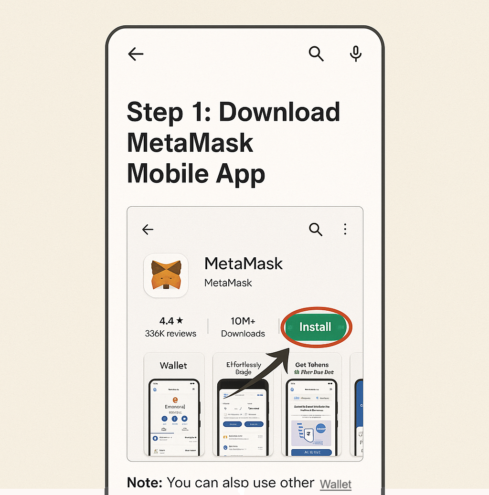
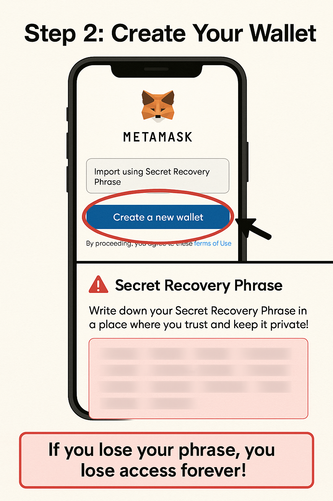
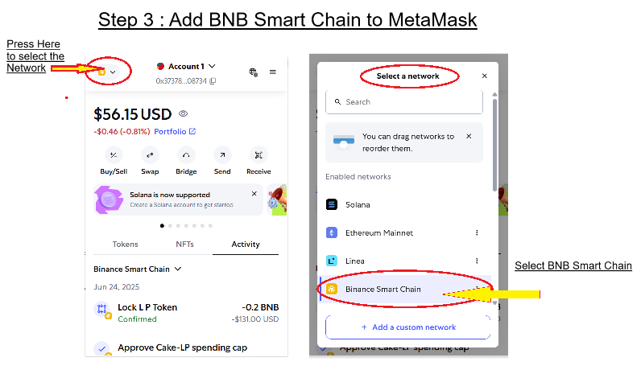
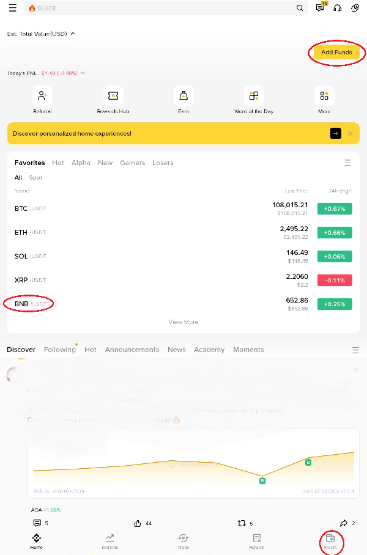
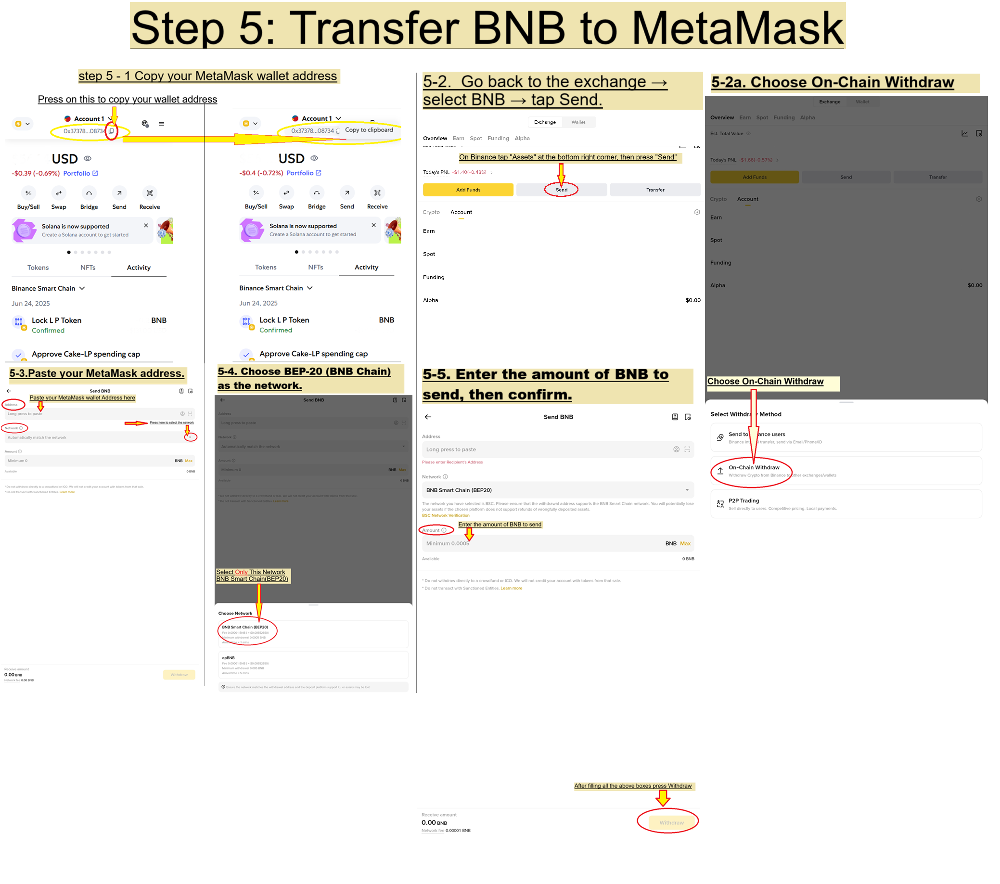
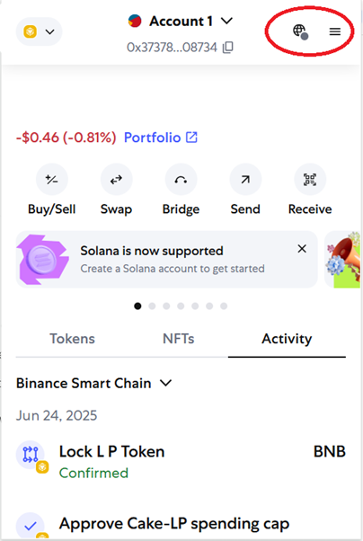
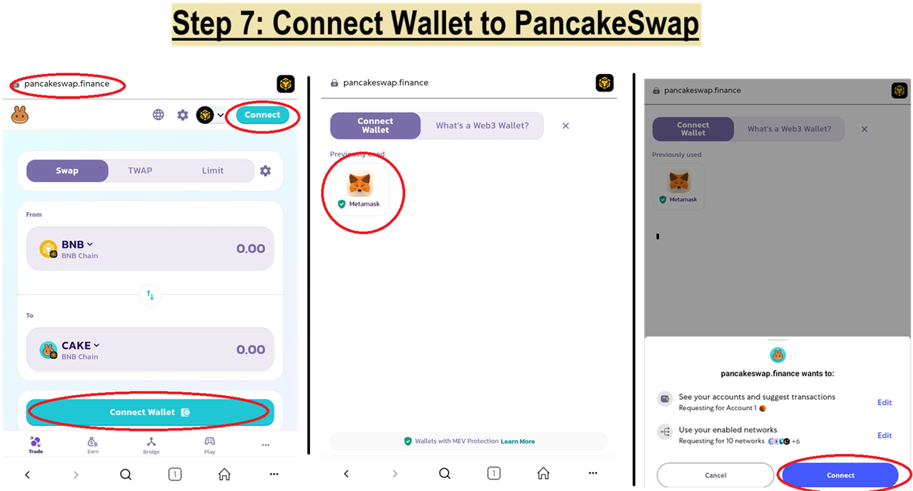
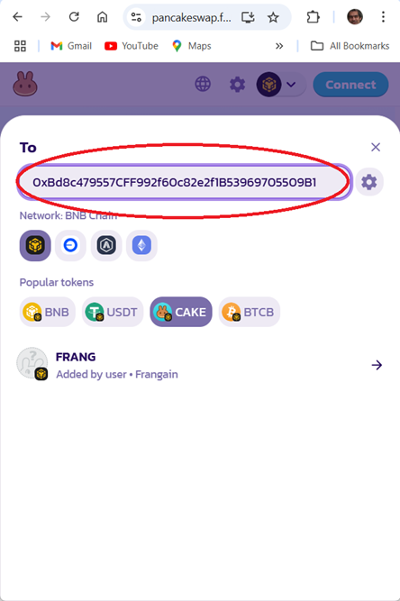
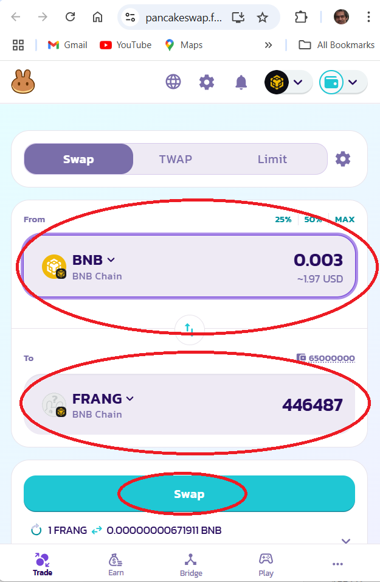
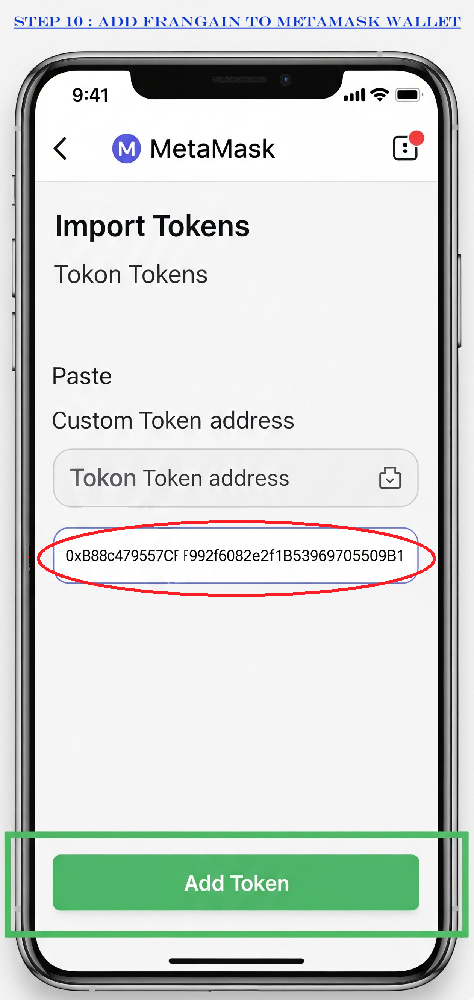

🔰 Intro Section — Before You Begin
Welcome! This guide will help you buy FRANGAIN — a cultural, symbolic token — using your phone, even if you’re new to crypto.
💡 What is FRANGAIN?
FRANGAIN is a digital token on the BNB Smart Chain (BSC) that commemorates a historic Lebanese currency and revives its memory in the web3 world.
🛠 Why PancakeSwap?
PancakeSwap is the most trusted decentralized exchange on the BNB Chain. It allows you to easily swap BNB for FRANGAIN in just a few taps.
📲 What You Need Before Starting
• A smartphone (Android or iPhone)
• Internet connection
• ID if you’re buying crypto through an exchange (like Binance or OKX)
• A piece of paper to write down your recovery phrase (very important!)
🟩 Step 1: Download MetaMask Mobile App

1. Open the App Store (iPhone) or Google Play Store (Android).
2. Search for MetaMask.
3. Tap the official app (orange fox logo).
4. Tap Install or Get.
5. Once installed, open the app.
✅ Make sure it’s published by “MetaMask” or “ConsenSys Software Inc.”
🟩 Step 2: Create Your Wallet

1. Tap “Get Started”, then tap “Create a new wallet”.
2. Set a secure password (you’ll use this to unlock the app).
3. Carefully read the screen that says “Your Secret Recovery Phrase”.
4. Tap “Reveal” to view the 12-word phrase.
5. Write the phrase down on paper. Do not screenshot. Do not copy it to your clipboard.
6. Confirm the phrase by selecting the words in the correct order.
⚠️ Red Box Warning:
If you lose your phrase, you lose your wallet forever. No one can recover it for you.
🟩 Step 3: Add BNB Smart Chain to MetaMask

- Tap on the network icon at the top left of the MetaMask home screen.
- On the “Select Network” window, choose Binance Smart Chain.
✅ Your wallet is now ready to receive BNB.
🟩 Step 4: Buy BNB on a Central Exchange

1. Create an account on an exchange like Binance, OKX, or KuCoin.
2. Verify your identity if required (KYC).
3. Buy BNB using your bank card, Apple Pay, or transfer.
4. Go to the “Withdraw” or “Send” section once your BNB is purchased.
⚠️ Tip: Use the same email and name on both the exchange and MetaMask to avoid transfer issues.
🟩 Step 5: Transfer BNB to MetaMask

1. In MetaMask, tap the account name to copy your wallet address.
2. Go back to the exchange → select BNB → tap Send → Choose On-Chain Withdraw.
3. Paste your MetaMask address.
4. Choose BEP-20 (BNB Chain) as the network.
5. Enter the amount of BNB to send, then confirm.
✅ In a few minutes, you’ll see BNB appear in your MetaMask wallet.
🟩 Step 6–9: Swap BNB for FRANGAIN
You can skip the manual setup and go directly to PancakeSwap using the button below:
🚀 Swap on PancakeSwap
Need help?
🟩 Step 6: Visit PancakeSwap

1. In the MetaMask app, tap the ☰ menu and go to Browser.
2. Paste this link:
👉 PancakeSwap Swap Link
✅ You can also open it in Chrome/Safari and tap “Connect Wallet.”
🟩 Step 7: Connect Wallet to PancakeSwap

1. On PancakeSwap, tap “Connect” at the top right.
2. Choose MetaMask.
3. Approve the connection.
✅ Green Tip: Always double-check the URL: https://pancakeswap.finance
🟩 Step 8: Add the FRANGAIN Token

1. If FRANGAIN doesn't appear, tap “Import Token”.
2. Paste this token address:
👉 0xBd8c479557CFF992f60c82e2f1B53969705509B1
3. Tap “Import”, then confirm.
✅ Now FRANGAIN will appear in your wallet.
🟩 Step 9: Swap BNB → FRANGAIN

1. BNB is on top, FRANGAIN on bottom.
2. Enter amount of BNB to spend.
3. Tap “Swap” and confirm in MetaMask.
⚠️ Keep $1–$2 in BNB for gas.
✅ If swap fails, increase slippage to 1–2%.
🟩 Step 10: Add FRANGAIN to MetaMask

1. Go back to MetaMask.
2. Tap “Import Tokens” at the bottom.
3. Paste the FRANGAIN contract address again:
👉 0xBd8c479557CFF992f60c82e2f1B53969705509B1
4. Tap “Add Token”.
✅ You should now see your FRANGAIN balance.
🟢 You're Done!
🎉 Congratulations! You now hold FRANGAIN — a unique digital memory, part of cultural history.
🔗 Connect with the community:
• frangain.com
• Twitter: @FrangainToken
• Telegram: t.me/frangain
🧩 Bonus Sections
❓ FAQs
• What is slippage? → A % price buffer to help your transaction go through
• Why didn’t my FRANGAIN show? → You need to manually import the token
• Why is gas fee required? → Every BNB Chain transaction needs BNB for gas
🔧 Troubleshooting
• Token not appearing?
→ Make sure the correct contract address is used
• Swap fails?
→ Try increasing slippage to 1–2%
• Transfer stuck?
→ Check BscScan.com with your wallet address
🔐 Security Tips
• NEVER share your recovery phrase
• NEVER enter your phrase into any website
• Only use trusted links (always check spelling)